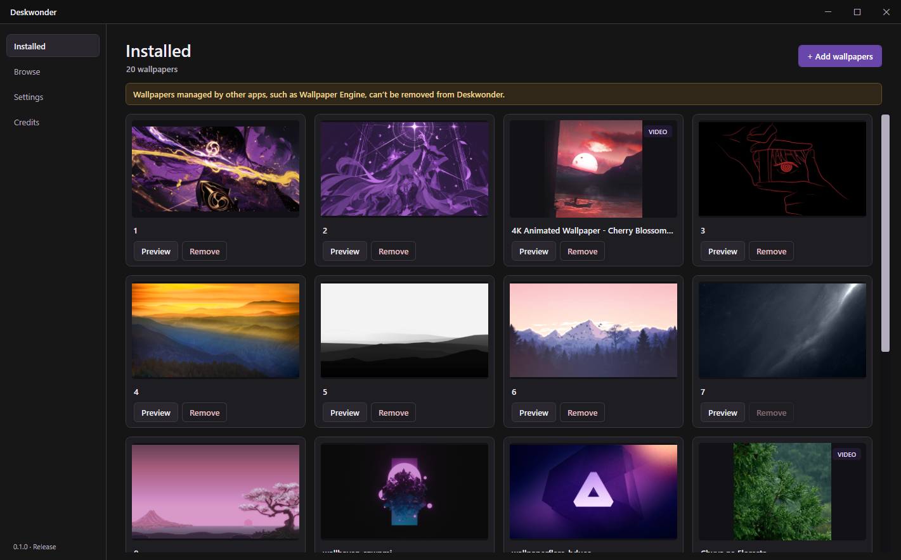

Wallpaper manager for Windows
Your desk.
Your way.
Browse and switch wallpapers right from your desktop. With Desk Wonder, your favorite images and videos are one keyboard shortcut away.
Download for WindowsVersion 0.1.0 · Windows may show a SmartScreen warning because the EXE is not signed yet. Click More info, then Run anyway.
Features
From folder to desktop.

- Easy to use
- Manage your wallpapers in the Installed tab, where you can import still images and animated wallpapers in formats like MP4.
- Wallpaper browser
- Browse Wallhaven and WallpaperFlare right in Desk Wonder. Filter by resolution, search using your own tags, and install wallpapers automatically with one click.
- Wallpaper Engine support
- Desk Wonder automatically detects and imports wallpapers installed by Wallpaper Engine. Download animated wallpapers from Steam Workshop through the built-in ManifestDeX downloader. Desk Wonder picks up the download and installs the wallpaper automatically.
Getting started
Set up your wallpaper library.
Download and run
Download the EXE for Windows 10 or 11 (x64) and run it from any folder. There is no installer, and .NET 10 is included. Browsing Steam Workshop needs the Microsoft Edge WebView2 Runtime. Most PCs already have it, so install it only if the Workshop page does not load.
Add your wallpapers
Look for the Desk Wonder icon in the system tray (it may be under the ^ arrow), right-click it and choose Show Manager…. In Installed, click + Add wallpapers to import your own images and videos, or open Browse to get new ones from Wallhaven, WallpaperFlare and Steam Workshop. Wallpapers from Wallpaper Engine are detected automatically.
Switch in a keystroke
Press Ctrl + Alt + Shift + W to open the picker. Scroll the mouse wheel or drag to browse, then click a wallpaper to apply it. Click outside the cards to close. The keyboard works too: arrow keys or W A S D to browse, Enter to apply, Esc to close. You can change the shortcut in Settings.
Supported formats and requirements
Desk Wonder supports JPG, JPEG, PNG, BMP, WebP, and JFIF images, as well as MP4, M4V, MOV, and WebM video. Video playback depends on the codecs installed in Windows. The Workshop browser requires Microsoft Edge WebView2.
Desk Wonder checks GitHub for a newer version when it starts and when you open the Manager. The wallpaper browsers contact Wallhaven, WallpaperFlare and ManifestDeX only when you use them. Nothing else leaves your PC except what any web request reveals, such as your IP address.